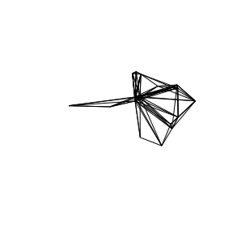
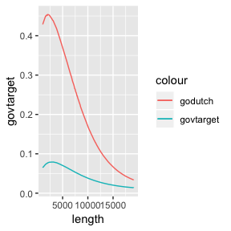

Vignette Title
R Lovelace and L Hama
2019-03-14
intro.RmdIntroduction
The goal of pct is to increase the accessibility and reproducibility of the data produced by the Propensity to Cycle Tool (PCT), a research project and web application hosted at www.pct.bike. For an overview of the data provided by the PCT, clicking on the previous link and trying it out is a great place to start. An academic paper on the PCT provides detail on the motivations for and methods underlying the project.
A major motivation behind the project was making transport evidence more accessible, encouraging evidence-based transport policies. The code base underlying the PCT is publicly available (see github.com/npct). However, the code hosted there is not easy to run or reproduce, which is where this package comes in: it provides quick access to the data underlying the PCT and enables some of the key results to be reproduced quickly. It was developed primarily for educational purposes (including for upcoming PCT training courses) but it may be useful for people to build on the the methods, for example to create a scenario of cycling uptake in their town/city/region.
In summary, if you want to know how PCT works, be able to reproduce some of its results, and build scenarios of cycling uptake to inform transport policies enabling cycling in cities worldwide, this package is for you!
Installation
You can install the development version of the package as follows:
Load the package as follows:
Get PCT data
From feedback, we hear that the use of the data is critical in decision making. Therefore, one area where the package could be useful is making the data “easily” available to be processed.
To download the data within www.pct.bike, we have added a suite of functions:
get_pct()get_pct_rnetget_pct_zonesget_pct_linesget_pct_centroidsget_pct_routes_fastget_pct_routes_quiet
For example, to get the centroids in Isle of Wight:
centroids = get_pct_centroids(region = "isle-of-wight")
#> Loading required package: sp
plot(centroids[, "geo_name"])
Likewise to download the desirelines for “west-yorkshire”:
lines = get_pct_lines(region = "isle-of-wight")
lines = lines[order(lines$all, decreasing = TRUE), c("all")]
plot(lines[1:10,], lwd = 4)
The rest of the get_pct_ functions are similar to the above two examples and download data from www.pct.bike.
However, the base of these functions is get_pct(). It has various parameters:
-
base_url = "https://github.com/npct/pct-outputs-regional-R/raw/master": just in case if you wanted to download the data from a similar server -
purpose = "commute": soon there will be “schools” and maybe other modes, but currently commute is the only option. -
geography = "msoa": MSOA or LSOA -
region = NULL: regions withinpct::pct_regions -
layer = NULL: one ofz(zones),c(centroids),l(desire lines),rf(routes fast),rq(routes quiet) orrnet. - even
extension = ".Rds"as PCT data is available in various formats. For the purpose of this pacakge we have made the default option of “Rds”.
Generate PCT data
The crucial part of the PCT is the two and possibly more functions currently within this package:
-
uptake_pct_godutch: generates the “GoDutch” scenario level of scycling based on a particular route’s hilliness percentage and length. -
uptake_pct_govtarget: generates the UK government target again based on the hilliness and length parameters.
Therefore, in order to genrate say a UK government target for an area like “Isle of Wight” from scratch:
Step one: we get the desire line for top destinations (top 100):
# top 100 origin destinations by all methods of travel
wight_desire_lines = pct::get_desire_lines(area = "isle of wight")
#> Parsed with column specification:
#> cols(
#> `Area of residence` = col_character(),
#> `Area of workplace` = col_character(),
#> `All categories: Method of travel to work` = col_double(),
#> `Work mainly at or from home` = col_double(),
#> `Underground, metro, light rail, tram` = col_double(),
#> Train = col_double(),
#> `Bus, minibus or coach` = col_double(),
#> Taxi = col_double(),
#> `Motorcycle, scooter or moped` = col_double(),
#> `Driving a car or van` = col_double(),
#> `Passenger in a car or van` = col_double(),
#> Bicycle = col_double(),
#> `On foot` = col_double(),
#> `Other method of travel to work` = col_double()
#> )
#> Parsed with column specification:
#> cols(
#> X = col_double(),
#> Y = col_double(),
#> objectid = col_double(),
#> msoa11cd = col_character(),
#> msoa11nm = col_character()
#> )
#> Parsed with column specification:
#> cols(
#> X = col_double(),
#> Y = col_double(),
#> objectid = col_double(),
#> msoa11cd = col_character(),
#> msoa11nm = col_character()
#> )
head(wight_desire_lines$all)
#> [1] 852 831 809 621 621 603
wight_routes_fast = stplanr::line2route(l = wight_desire_lines)
#> 10 % out of 100 distances calculated
#> 20 % out of 100 distances calculated
#> 30 % out of 100 distances calculated
#> 40 % out of 100 distances calculated
#> 50 % out of 100 distances calculated
#> 60 % out of 100 distances calculated
#> 70 % out of 100 distances calculated
#> 80 % out of 100 distances calculated
#> 90 % out of 100 distances calculated
#> 100 % out of 100 distances calculated
plot(wight_desire_lines$geometry)
Step two: we generate a fast route network using stplanr, we would need a CycleStreets.Net API key for this:
library(stplanr)
wight_routes_fast = stplanr::line2route(l = wight_desire_lines)
#> 10 % out of 100 distances calculated
#> 20 % out of 100 distances calculated
#> 30 % out of 100 distances calculated
#> 40 % out of 100 distances calculated
#> 50 % out of 100 distances calculated
#> 60 % out of 100 distances calculated
#> 70 % out of 100 distances calculated
#> 80 % out of 100 distances calculated
#> 90 % out of 100 distances calculated
#> 100 % out of 100 distances calculated
plot(wight_routes_fast[, c("av_incline")])
Step three: we can now get the propensity to cycle percentages from the uptake_pct_godutch using the length and av_incline from the wight_routes_fast object.
wight_pcycle_dutch = pct::uptake_pct_godutch(
distance = wight_routes_fast$length,
gradient = wight_routes_fast$av_incline
)
#> Distance assumed in m, switching to km
wight_psycle_gov = pct::uptake_pct_govtarget(
distance = wight_routes_fast$length,
gradient = wight_routes_fast$av_incline
)
#> Distance assumed in m, switching to km
wight_uptake = wight_routes_fast
wight_uptake$govtarget = wight_psycle_gov
wight_uptake$godutch = wight_pcycle_dutch
library(ggplot2)
ggplot(wight_uptake) +
geom_line(aes(
length,
govtarget,
colour = "govtarget"
)) +
geom_line(aes(
length,
godutch,
colour = "godutch"
))
We can also see which routes would have the highest uptake using mapping packages such as:
# mapview::mapview(wight_uptake, zcol = "govtarget")
# mapview::mapview(wight_uptake, zcol = "godutch")
image